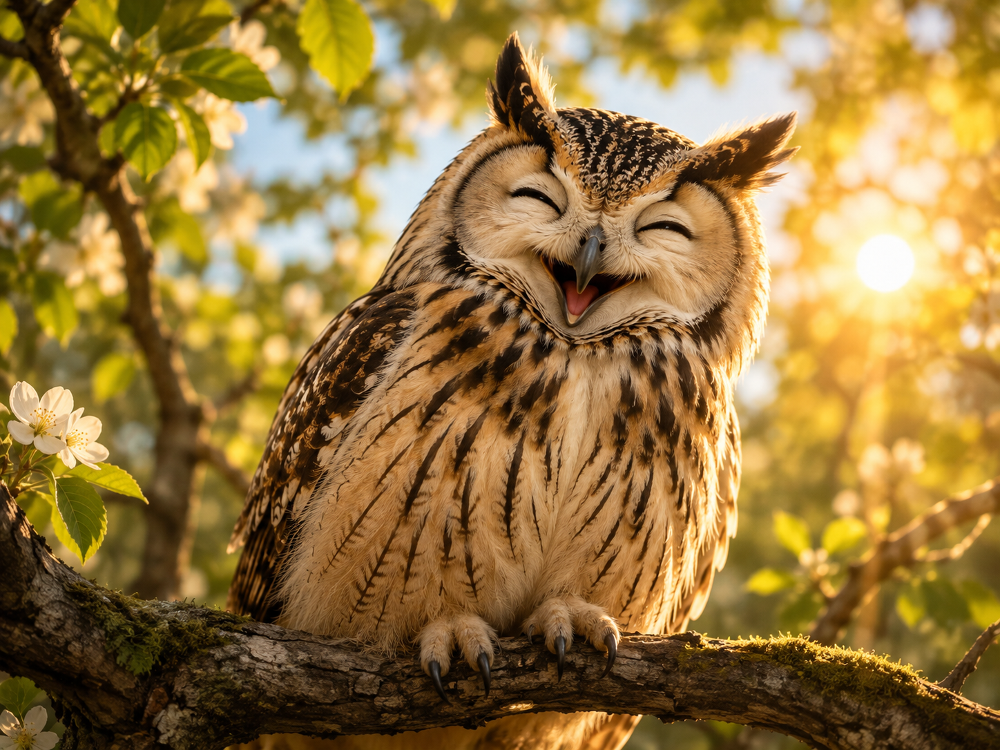
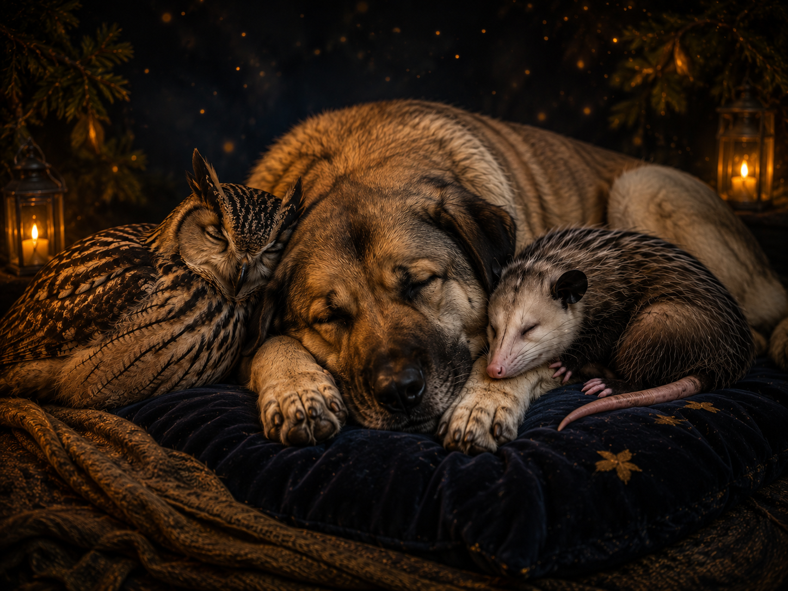

Eine biologische Entdeckungsreise
Die Neurobiologie
der inneren Sicherheit.
Keine Metapher ohne empirischen Grund. Ein tiefer Blick in die Architektur unseres Nervensystems — wie wir Regulation erlernen, Grenzen setzen und zu einem sicheren Raum für uns selbst und andere werden.
Leas Spiegelwelten
Ein musikalischer Trost-Anker über den inneren Wachhund, die weise Eule, den Kuscheldeckenmodus und das Versprechen, ein sicherer Gartenzaun zu sein.
Datei 'leas spiegelwelten.mp3' nicht gefunden.
Das Spiegelkabinett der Möglichkeiten
Es war tiefe Nacht, als ein leises Summen den Raum erfüllte. Ein alter, ovaler Spiegel im Flur begann in einem sanften, goldenen Licht zu leuchten. Wer hineinsah, erblickte nicht sein äußeres Gesicht, sondern die Architektur des eigenen Inneren — eine Landschaft aus dichten Wäldern, Alarmglocken und stillen Tälern. Hier nahm die Biologie des Nervensystems physische Gestalt an.
Der knurrende Wachhund
In einer Landschaft ohne Zäune, in der jeder Impuls sofort erfüllt wird und keine Struktur Orientierung bietet, übernimmt die Amygdala das Kommando. Es ist der innere Wachhund. Er steht unter Dauerstrom.
Weil das System im Außen keine Führung erfährt — keine liebevollen, aber klaren Grenzen — glaubt der Wachhund, er müsse die gesamte Existenz allein verteidigen. Er knurrt bei jeder Kleinigkeit, unfähig zu ruhen, ständig im Sympathikus-Modus gefangen.
Das Opossum & die Erstarrung
Wenn die ständige Wachsamkeit zu viel Energie kostet und das System ausbrennt, greift eine ältere biologische Strategie: Der dorsale Vagus-Kreislauf. Das innere Opossum legt sich ins Laub und spielt tot.
Dies ist kein Zeichen von Entspannung, sondern von Erstarrung (Freeze). Das System entzieht sich der Reizüberflutung der digitalen Dopamin-Raupe und der Grenzenlosigkeit durch vollständigen Rückzug. Ein Schutzmechanismus, um nicht am eigenen Stress zu zerbrechen.
Die weise Eule erwacht
Erst wenn das äußere Umfeld durch bewusste Co-Regulation eingreift — indem klare Leitplanken gesetzt und ein liebevolles "Nein" als verlässlicher Gartenzaun etabliert wird —, kann der Wachhund sich hinlegen.
In diesem Raum der Sicherheit öffnet die weise Eule (der präfrontale Kortex) ihre Augen im goldenen Licht. Hier entsteht echte Lernfähigkeit, Reflexion und Empathie. Die Eule kann nur fliegen, wenn der Sturm der Angst vorüber ist.


Das schlafende Trio
Der Kuscheldecken-Modus ist erreicht. Amygdala, dorsaler Vagus und präfrontaler Kortex befinden sich in vollkommener systemischer Balance. Keine Instanz wird verdrängt, alle werden durch einen gefestigten Stamm und tiefe Wurzeln gehalten.
Das ist der Moment, in dem Regulation kein Konzept mehr ist, sondern verkörpertes Wissen. Die Stille im System wird zur aktiven Erholung, getragen von tiefem, innerem Frieden.